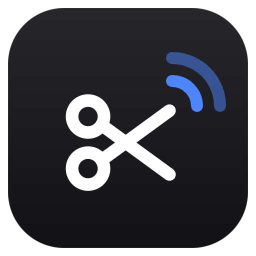
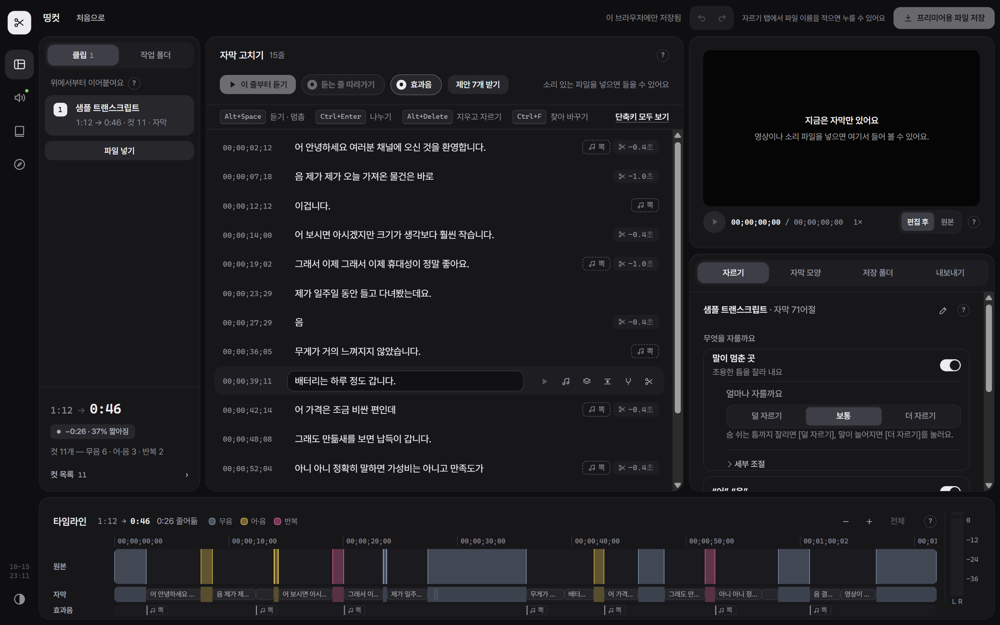

띵컷
촬영본에서 말이 멈춘 곳, “어”·“음”, 같은 말 반복을 찾아 잘라 내요. 자막도 만들어요. 결과는 프리미어 프로로 그대로 가져가요.
무료예요. 가입하지 않아도 돼요. · 판마다 달라진 것

이렇게 써요
영상을 넣어요
창에 끌어다 놓으면 돼요. 여러 개를 넣으면 차례대로 이어 붙여요.
들으면서 확인해요
잘릴 곳이 자막 줄마다 표시돼요. 틀린 자막은 글처럼 고치고, 살리고 싶은 컷은 눌러서 되살려요.
프리미어로 가져가요
[프리미어용 파일 저장] → 프리미어에서 파일 → 가져오기. 잘린 시퀀스와 자막이 들어와요.
처음 켤 때 한 번 막혀요
띵컷은 아직 서명하지 않은 프로그램이라, 처음 한 번은 운영체제가 경고 창을 띄워요. 아래처럼 넘기면 다음부터는 바로 켜져요.
Windows
- “Windows의 PC 보호” 창에서 [추가 정보]를 눌러요.
- [실행]을 눌러요.
Mac
- 받은 dmg 를 열어 띵컷을 응용 프로그램 폴더로 끌어다 놓아요.
- 막히면 [완료] → 시스템 설정 → 개인정보 보호 및 보안 맨 아래의 [그래도 열기].
- “손상되었기 때문에 열 수 없습니다”가 뜨면 터미널에 한 번 붙여 넣어요.
xattr -dr com.apple.quarantine /Applications/DDingCut.app
알아 두면 좋아요
| 내 컴퓨터 안에서 | 영상과 소리는 밖으로 나가지 않아요. 자막도 이 컴퓨터에서 만들어요. |
|---|---|
| 처음 켜면 | 자막 만드는 도구를 뒤에서 받아요(약 2GB, NVIDIA 그래픽카드가 있으면 1.3GB 더). 몇 분 걸리고, 그동안에도 컷 편집은 돼요. 한 번 받으면 인터넷 없이 써요. |
| 필요한 것 | Windows 10 · 11(64비트) 또는 macOS 12 이상. 빈 공간 5GB. 프리미어 프로(XML 가져오기가 되는 판). |
| 자막 정확도 | 고유명사 · 신조어, 겹쳐 말하기, 큰 배경음악에서는 틀리거나 빠뜨려요. 그래서 자막을 글로 고치고 한꺼번에 찾아 바꾸는 화면이 있어요. |
안 되거나 이상하면
어떤 영상에서 무엇이 이상했는지 알려 주세요. 고쳐서 새 판으로 내요.